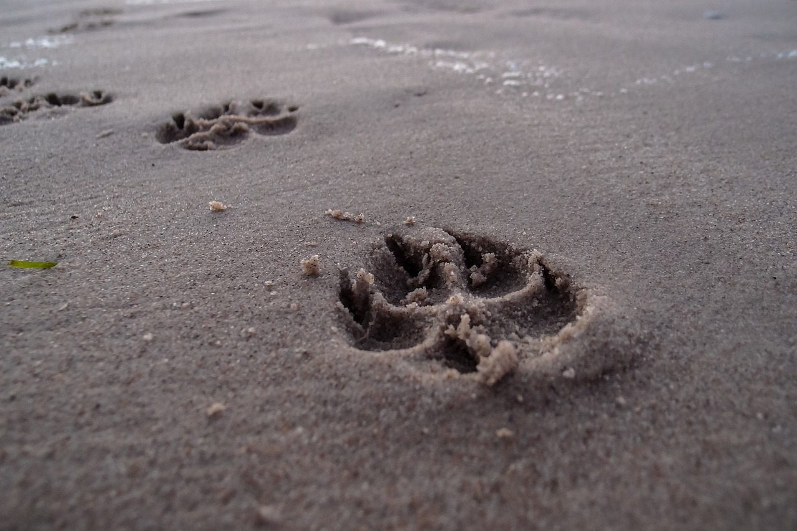

Safe Swimming Tips for Dogs
Swimming at Florida’s dog beaches is a fantastic way for your pup to stay cool and active — but saltwater, waves, and strong currents can pose hidden risks. Here’s how to keep your dog safe, confident, and happy in the surf.
1. Know Your Dog’s Swimming Ability
Not all dogs are natural swimmers. Breeds with short legs, heavy bodies, or flat faces (like Bulldogs and Pugs) tire quickly in water. Always start in shallow areas and let your dog wade in at their own pace. Consider a dog life jacket for extra safety — especially in deeper or choppy water.
2. Watch for Rip Currents and Waves
Even experienced swimming dogs can struggle in strong surf. Always swim in designated dog beach areas and watch for warning flags or local advisories. Avoid letting your dog swim during rough seas or red tide conditions. If your dog drifts too far, stay calm and call them back — don’t swim after them in strong current zones.

3. Protect Against Saltwater Ingestion
Dogs often gulp saltwater while playing fetch or swimming, which can cause vomiting and dehydration. Bring fresh drinking water and a travel bowl to encourage breaks. If your dog shows signs of drooling, fatigue, or vomiting after swimming, stop water play and let them rest in the shade.
4. Mind the Heat and Temperature
Florida’s sun can heat sand and shallow water quickly. Avoid swimming during the hottest parts of the day, and keep play sessions short. Offer shade breaks and rinse your dog with clean water afterward to remove salt and sand buildup from their coat and skin.

5. Rinse and Dry Thoroughly
After swimming, rinse your dog with fresh water to wash off salt, sand, and algae that can irritate their skin. Pay extra attention to the ears — moisture and salt can lead to infections. Dry your dog’s coat completely before heading home to prevent rashes or odor.
6. Supervise Constantly
Even strong swimmers can panic or swallow water unexpectedly. Stay close to your dog at all times, especially near drop-offs or sudden waves. Supervision is the best way to ensure a fun, worry-free swim at any Florida dog beach.
Swimming should always be fun and safe. With a bit of preparation and attention, you can make every beach trip an enjoyable, stress-free experience for your best friend.